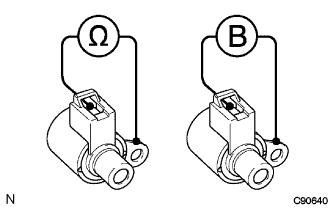

Transmission 3-way Solenoid Assembly NO.2 (U660E) Inspection |
| 1. Inspect Transmission 3 Way Solenoid Assembly (ATM) |
 |
Resistance Inspection
Using SST (Toyota electrical tester), inspect the resistance between the connector terminal ←→ body ground.
| Tester Connection | Condition | Standard |
|---|---|---|
| Connector terminal - Body ground | Always | 11 to 15 Ω (at 20°C) |
Operation Check
When battery voltage is applied between the connector terminal ←→ body ground, confirm that the valve in the solenoid operates.